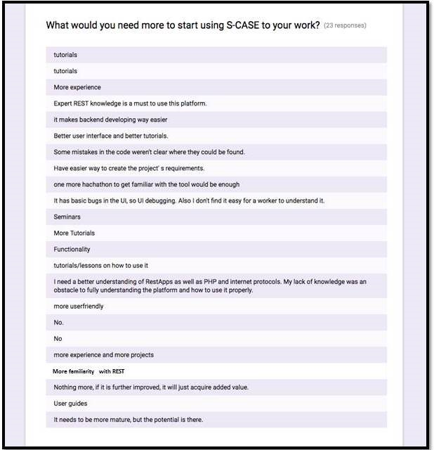
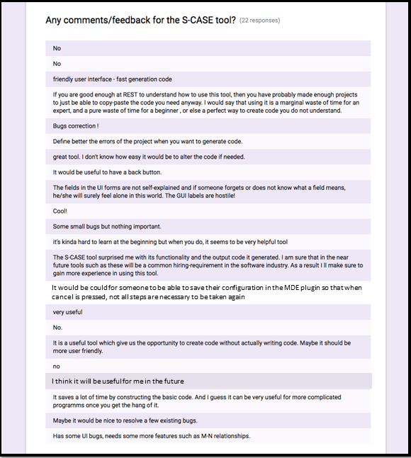

In order to evaluate the S-CASE platform apart from the three pilot
prototypes that were developed and deployed, two (2) hackathon sessions
were also organised. The purpose was to get potential S-CASE
users/customers familiar with the platform and its functionality and
also get valuable feedback from them.
Aristotle University of Thessaloniki (AUTH) has organized two
hackathons the 1st and 2nd of July 2016: S-CASE hackathon4business
and S-CASE hackathon4students. Hackathon4business targeted web
developers of companies and organizations in the vicinity of the
Thessaloniki area, while hackathon4students was specific to
undergraduate students in their final years of the department of
Electrical and Computer Engineering of the Aristotle University of
Thessaloniki. Centre for Research and Technology Hellas / Information
Technologies Institute (CERTH/ITI) participated in the hackathons as
well, with a session on the Web Service Composition tool. Before the
hackathon4business started, the participants were asked to take a
survey in order to give information regarding their background and
after the end of both hackathons, the participants were asked to
take a survey in order to evaluate S-CASE.
Hackathon4Business
Pre-hackathon survey results from 19 participants
Figure 1: What is your area of focus/role
Figure 2: What’s the biggest difficulty you encounter during a software project
Figure 3: How do you capture requirements for a new software project today
Figure 4: What is your favourite type of requirements
Figure 5: Have you ever been involved with front-end development for the web
Figure 6: Have you ever been involved with back-end development for the web
Figure 7: Do you develop in Java
Figure 8: Are you familiar with the concept of web services
Figure 9: Are you familiar with any Java web service frameworks
Figure 10: Have you ever been involved with mobile apps development
Based on the responses collected from the pre-hackathon survey, the following results can be summarized below:
- - All participants have some SW background (different levels of experience)
- - 21.1% have difficulties in requirements capturing
- - 36.9% have difficulties in testing & debugging
- - 63.2% prefer UML diagrams or textual requirements while 36.8% prefer use case templates for requirements capturing
- - 89.5% have some (front/back-end) web development experience
- - 72.2% are familiar with Java
- - 89.5% are familiar with web services
- - 47.4% are familiar with mobile apps development
Post-hackathon survey results from 19 participants
After the hackathon has finished and the developers have seen the
platform and the procedure, we asked the attendees to fill out
another survey. Fifteen (15) developers responded and the results
can be found below.
Figure 11: S-CASE toolkit preference
Figure 12: S-CASE UI/UX rating
Figure 13: S-CASE look and feel rating (1: not satisfied, 5: excited)
Figure 14: Additions/improvements
Figure 15: S-CASE recommendation to potential users (1: never, 10: for sure)
Figure 16: Comments/feedback for S-CASE
Figure 17: S-CASE hackathon rating (1: very bad, 5: excellent)
Based on the responses collected from the post-hackathon survey, the following results can be summarized:
- - 40% would use the requirements editor
- - 26.7% would use the MDE plugin
- - All participants think that the UI is easy to use or easy to learn
- - 93.3% state that are satisfied (above average) of the look & feel
- - Most participants require support for other languages and more tutorials
- - 80% would recommend S-CASE
- - All participants rate the hackathon above average
Hackathon4Students
After showing the S-CASE platform and the process of creating web
services to the 46 participating students, we asked them to fill
out the same post-hackathon survey. The 41 responses can be found
below.
Figure 18: S-CASE toolkit preference
Figure 19: S-CASE UI/UX rating
Figure 20: S-CASE look and feel rating (1: not satisfied, 5: excited)
Figure 21: S-CASE recommendation to potential users (1: never, 10: for sure)

Figure 22: Additions/improvements

Figure 23: Comments/feedback for S-CASE
Figure 24: S-CASE hackathon rating (1: very bad, 5: excellent)
Based on the responses collected from the post-hackathon survey, the following results can be summarized:
- - 73.2% would use the MDE plugin
- - 19.5% would use the requirements editor
- - 75.6% think that the UI shall be more user friendly
- - 90.3% state that are satisfied (above average) of the look & feel
- - Most of the participants require more/better tutorials
- - 92.7% would recommend S-CASE
- - 97.5% rate the hackathon above average